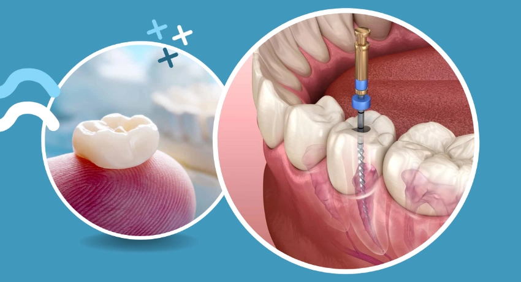
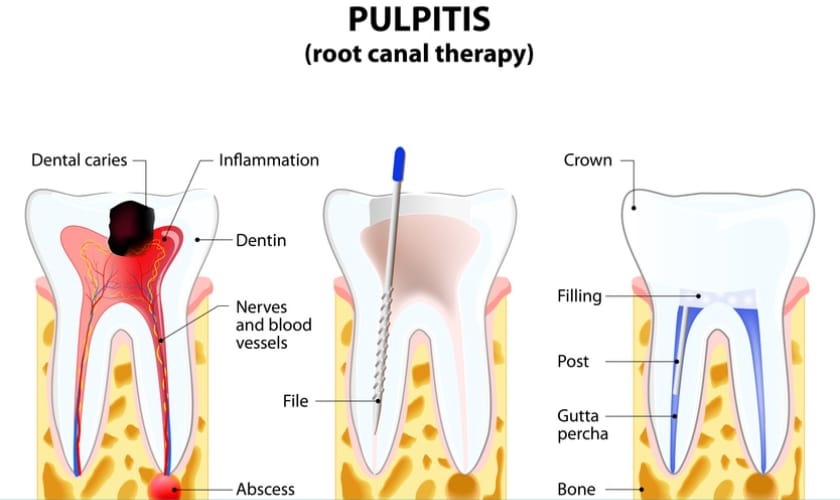
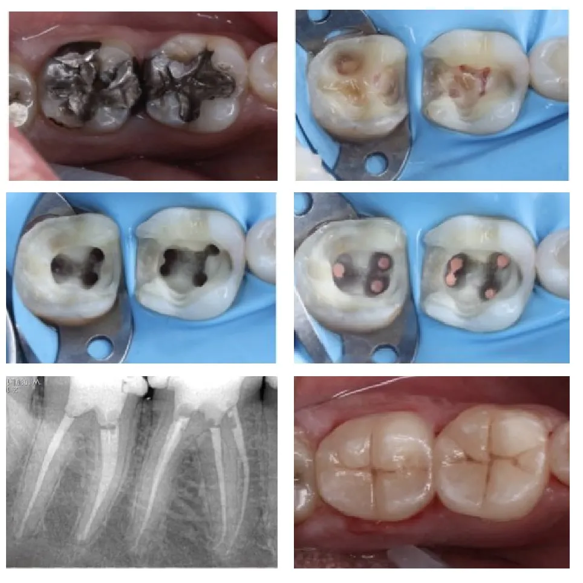

Root Canal Treatment
A tooth has three layers: enamel, dentin, and pulp. When the cavity is so deep that it has reached the pulp, Root Canal Treatment (RCT) is necessary. In this procedure, all the infection from within the tooth is removed, all the canals in the root are cleaned, and medicament is placed. Afterward, the tooth is sealed to prevent any further infection from seeping in.
After performing Root Canal Treatment, the tooth becomes weak and brittle, making it more prone to damage. Therefore, a post-Root Canal Treatment crown is crucial to protect the tooth and restore its strength and function.
Placing a crown helps the tooth become strong and capable of withstanding the forces, just like a normal tooth.
Nowadays, even badly broken teeth can be saved by Root Canal Treatment and rebuilding with a metal or white fiber post and core, as long as even 1-2 mm of the tooth is visible.
FAQ's
Is a root canal procedure painful?
Root canal treatments are performed with local anesthesia, making the procedure comfortable and pain-free. With modern rotary instruments, the process is also faster compared to traditional hand tools.
How many visits are required for a root canal procedure?
The number of visits depends on the extent of the infection. However, in most cases, the entire root canal treatment and crown placement can be completed in 2 to 3 visits, usually within a week. More visits may be necessary for severe infections or swelling.
Why is a crown necessary after a root canal treatment?
After a root canal, the treated tooth may become brittle and more prone to breaking. A crown helps reinforce and protect the tooth, allowing it to function properly under the pressure of chewing. The crown also seals the tooth, preventing reinfection and protecting the root canal filling.
Can a severely damaged tooth still be treated with root canal therapy?
Yes, as long as at least 1mm of healthy tooth structure remains visible, root canal therapy can still be performed. In such cases, a post and core may be used to rebuild the tooth and provide a strong foundation for the crown, ensuring the tooth can handle chewing forces.
When is a root canal needed instead of a filling?
Root canal treatment is necessary when the infection reaches the innermost part of the tooth, which contains nerves and blood vessels. A filling alone can't effectively treat this kind of infection. The infected tissue needs to be removed to prevent the spread of bacteria.
What are the benefits of preserving a tooth through root canal treatment and crown placement?
Preserving the tooth through root canal treatment helps maintain the surrounding bone structure and keeps adjacent teeth in their proper positions. This helps prevent further dental issues and ensures the integrity of the bite.
What is the success rate of root canal therapy?
Root canal treatments have a success rate of over 95%, thanks to advancements in dental technology. The use of precise tools, such as apex locators, digital imaging, rotary instruments, and high-quality materials for post and core restorations, contribute to the high success rate and long-term effectiveness of the treatment.